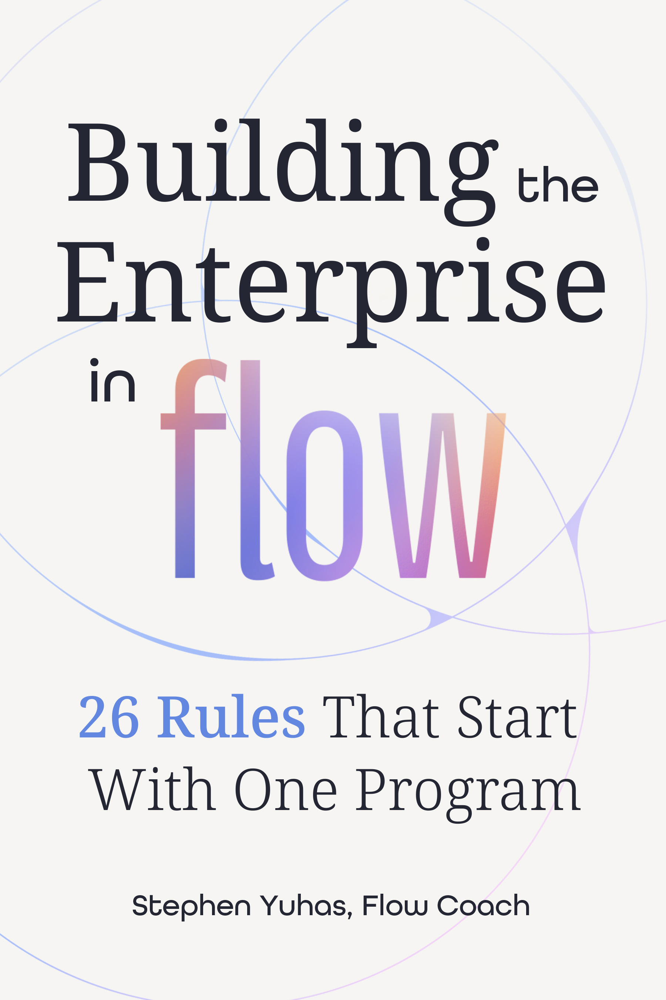

I build the operating models, governance, and portfolio systems that turn reactive, fragmented organizations into predictable, scalable delivery engines. 30+ years at Fortune 50 scale — T-Mobile, AT&T — turning chaos into flow. I wrote the book on it, and I build the tools that run it.
The track record, the methodology, and the tools that put it to work.
Thirty years of enterprise program leadership — the roles, the results, the capabilities, and what colleagues say about working with me.
A growing library of tools built on the methodology — starting with free Power BI custom visuals designed for people who don't have time to learn a new tool.
Building the Enterprise in Flow: 26 Rules That Start With One Program. Available now in paperback and ebook across every major store.

Twenty-six rules, pulled from three decades of transformations — the ones that worked, the ones that flamed out, and the diagnostic instinct that separates them. Written for the people who carry the transformation, not the ones who slideware it. It starts with one program.
I'm actively interviewing for Program Management and PMO leadership roles — FTE or contract. If you're scaling a delivery organization, standing up a PMO, or cleaning up a portfolio that's outgrown its operating model, I'd love to talk.